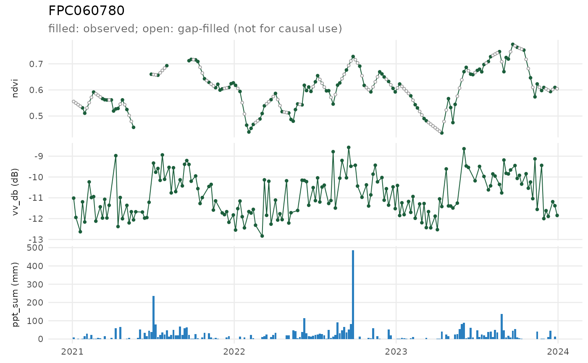

One panel per variable. Observed optical values are points joined by a line; with
show_gap_filled = TRUE the gap-filled values are drawn as open circles. Rainfall is drawn as
bars. Lines are broken where observations are more than 30 days apart. Needs the ggplot2
package.
Usage
fpc_plot_field(
field,
vars = c("ndvi", "vv_db", "ppt_sum"),
years = NULL,
from = NULL,
to = NULL,
show_gap_filled = TRUE,
x = NULL,
dir = NULL
)Arguments
- field
Field identifier.
- vars
Variables to plot.
- years
Years to read.
NULLreads every year that is in the data folder.- from, to
First and last date (
Dateor"YYYY-MM-DD") of the periods to keep.- show_gap_filled
Draw the gap-filled optical values (read with
observed_only = FALSE).- x
Optional data frame from
fpc_composites()(wide); ifNULLthe data are read.- dir
Data folder. Defaults to
fpc_dir().
Examples
if (requireNamespace("ggplot2", quietly = TRUE)) {
d <- fpc_example_dir()
id <- fpc_fields(tier = "A", dir = d, geometry = FALSE)$field_id[1]
fpc_plot_field(id, years = 2021:2023, dir = d)
}
